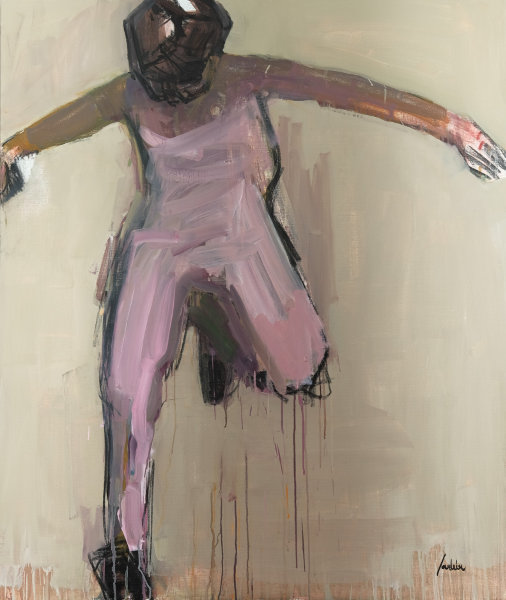

ACTUALITÉS
UN TRAVAIL QUI S'ENROULE ET SE DÉROULE AUTOUR DE L'INDIVIDU
(élément d'un ensemble, d'une population)
"Tous les jours je dois m'imaginer dans un jour blanc, ce sont les jours blancs, vides, vastes qui sont les plus nourrissants blabla"
F. Joudrier
CORPS / ARCHITECTURES ANATOMIQUES (Tutti/Ronde/Fauteuil/Baignoire/Kimono/Trophée)
UN MONDE ENTIER DANS UNE IMAGE(petit paysage)
TOILES A TAPISSERIE(Fleurs/Oiseaux)
PRIX FONDATION TAYLOR (Claire Combe 2020)
//// PARCOURS DE L'ART #30 - AVIGNON
12 artistes
11 au 27 Octobre 2024
GALERIE LE DOMAINE PERDU
Solo show du 12.04 au 15.06.2025
du mardi au dimanche 10h-12h30/15h-19h
3330 Route des Côteaux- 24220 Meyrals
05 53 30 47 50 - 06 83 50 01 11
PEINTURES



DÉMARCHE
" (...) le propre de tout effort créateur en matière d'art est d'habiller, justement, l'abstrait"
Nathalie Sarraute (Interview)
Utiliser la peinture dans une figuration composée de formes/sujets présentés inlassablement. Enfermer la peinture dans une figure particulière ...et penser qu'il se passe quelque chose dans le tableau
Françoise Joudrier est une peintre française contemporaine. Elle réalise une oeuvre qui mêle graphisme et peinture. Travail caractérisé par l'expression, la spontanéité, une désinvolture maitrisée. Elle développe une thématique existentielle axée sur le particularisme et l'individu. Son "WHO I Am" ne questionne pas, ne donne pas de réponse.. Il met en avant le simple témoignage d'être seul unique, particulier, singulier dans sa différence à l'autre, le corps, la vie. "Chacun se porte. Chacun porte sa vie. Je vis dans moi. C.est systémique > le corps la vie moi.. C'est le corps qui commence et finit l'histoire alors " Après des séries sur les Trophées Animaliers, Objets, elle se tourne vers "Les Architectures Anatomiques" (Fauteuil, Baignoire, Kimono) "Toiles à tapisserie" (fleurs, oiseaux) et les personnages avec les séries Ronde et Tutti. Depuis 2002, son travail est exposé en France et à l'étranger. En 2020, La Fondation Taylor lui décerne le Prix Claire Combes.
"Belle, sobre et vraie peinture, décantée et classieuse, retenue et discrète, dense et souterraine. (...) Il n'y a pas d'échappatoire. Saisissant face à face."
Christian Noorbergen
"Quant arrête t on le geste ?
Quant sait on que c'est fini, qu'on a rendu visible l'infini ?
Qu'il ne faut plus y toucher ?
Qu'un pas de plus guillotinnerait la grâce ?"
Anne Monteil Bauer
ÉVÈNEMENTS
EXPOSITIONS / EXHIBITIONS :
- 2025
Solo show GALERIE LE DOMAINE PERDU - Meyrals (24) - 2024
Collectif Galerie Ch.Mélanson
PARCOURS DE L'ART #30 Groupshow - Avignon 84 FR - 2023
Galerie Claudine Legrand - Paris 6eme FR
Château Alba "Donner à voir" - Alba La Romaine (07) FR - 2022
Galerie The Artistic Red Dot - Parcé s/Sarthe (72) FR
- 2021
Galerie Claudine Legrand - Paris 6eme FR
- 2020
Galerie Le Domaine Perdu - Meyrals FR
- 2019
Galerie Claudine Legrand - Paris 6eme FR
Invitée d'honneur Puls'Art - Pavillon Monod - Le Mans FR
Espace Frédérique Martiningo - Chambéry(73) FR
Galerie Le Domaine Perdu - Meyrals FR - 2016
Galerie Le Domaine Perdu - Meyrals FR
Galerie Olivia Ganancia - Paris 6eme FR - 2015
Galerie l'Oeil Soleil - Cliousclat (26) FR
Galerie Chantal Mélanson - Annecy (73) FR - 2014
Galerie Art Espace - La Rochelle FR
Galerie Le Domaine Perdu - Meyrals FR
Galerie Olivia Ganancia - Paris 6eme FR - 2013
Studios France 2 TV - Plateau Thé ou Café - FR
Galerie Olivia Ganancia - Paris 6eme FR - 2012
Galerie l'Oeil Soleil - Cliousclat (26) FR
- 2011
Galerie le Salon Français des Arts (Olivia Ganancia) - Paris 6ème FR
Galerie Le Domaine Perdu - Meyrals FR - 2010
Galerie Séverin Maly - Paris 6ème FR
Galerie l'Oeil Soleil - Cliousclat (26) FR
Galerie Olivia Ganancia - Paris 6eme FR - Château Alba - Alba la Romaine 07
- Centre d'Art Y.Morin - Poêt Laval 26
- Galerie The Artistic Red Dot - Parcé s/Sarthe 72
- Fondation Taylor - Paris
- Parcours de l'Art #26 - Cloître St Louis - Avignon 84 FR
- Espace Martiningo - Chambéry 73 FR
- MAC Chantal Mélanson - Tarascon 13 FR
- Musée d'Art et d'Histoire-Couvent des Cordeliers (PRINTEMPS-ARLES-CONTEMPORAIN) / MAC Chantal Mélanson - Tarascon FR
- Galerie Claudine Legrand - Paris 6ème
- Galerie Olivia Ganancia - Paris 6ème
- ArtFair Bruxelles - Galerie Olivia Ganancia, BE
- Cité des Arts - Puls'Art - Le Mans FR
- Galerie Art Espace - La Rochelle FR
- Galerie Chantal Mélanson - Annecy FR
- ArtFair New York - Galerie Olivia Ganancia USA
- ArtFair Londres - Galerie Olivia Ganancia UK
- Salon Comparaison/Art en Capital - Paris 6ème
- Galerie L'Oeil Soleil - Cliousclat FR
- ArtFair Paris - Galerie Olivia Ganancia
- ArtFair Lille - Galerie Olivia Ganancia - FR
- Salon de Lyon et du Sud-Est - Lyon FR
- ArtFair Stockolm - Galerie Olivia Ganancia - SE
- ArtFair Amsterdam - Galerie Olivia Ganancia - NL
- Adelgallery - Lyon et Ménerbes FR
- ArtFair New York - Galerie LivingWithArt – USA
- Prieuré de Manthes - Manthes FR
- L'Archipel sur le Lac - St Martin du Lac FR
- Bazart (tournée itinérante, Paris, Lyon, Nantes, Strasbourg, Toulouse, Marseille..) FR
- Galerie Berlioz - Sausset les Pins FR
- Galerie Emiliani -La Bégude de Mazenc FR
EXPOSITIONS PERSONNELLES 2010-2023 / SOLO EXHIBITIONS 2010-2023 :
EXPOSITIONS COLLECTIVES 2007-2023/ GROUP EXHIBITIONS 2007-2023 :
INTERVENTIONS / CONTRIBUTIONS :
2007 - 2008 Ecoles Piolenc (84) L'Enfance de l'Art
ILLUSTRATIONS :
Editions l'Ecole des Loisirs (collection Archimède) "Un moment lumineux"/Auteur JP Verdet
ACQUISITIONS :
FIAA Le Mans
Mairie de Lyon
ARTICLES
Interview, Puls´Art 2019 - Pavillon Monod, Le Mans
[magazine MIROIR DE L'ART, n°97, 2018]
[magazine MIROIR DE L'ART, Hors série 100 ARTISTES D'AUJOURD'HUI ET DE DEMAIN, 2016]
[magazine MIROIR DE L'ART, n°75, 2016]
[magazine ARTENSION, n° 132, Juillet/Août 2015]
Christian Noorbergen
Critique d'art
[Miroir de l'Art, n°60, Décembre/Janvier 2015]
Coup de coeur de la Rédaction...
Ludovic Duhamel
Directeur publication et rédaction de la revue "Miroir de l'Art"
[Brèv'Aralya, n°24, Novembre 2014]
Françoise Joudrier, ses corps d'immensité
Christian Noorbergen
Critique d'art
[Miroir de l'Art, n°54, Avril-Mai 2014]
Zoom Françoise Joudrier
"Il n’y pas d’écriture sans rencontre. La rencontre avec la peinture de Françoise Joudrier a eu lieu voici quelques mois à la galerie Olivia Ganancia, à Paris. Je me souviens qu’au premier regard la série des fauteuils a cristallisé cet instant. Il faut dire qu’il y a dans ce fauteuil immobile qui envahit toute la toile une présence qui trouble et interroge. [...]"
Ludovic Duhamel
Directeur publication et rédaction de la revue "Miroir de l'Art"
"[...] Une manière où la spontanéité, l’imprévisibilité et l’inattendu sont tempérés par un instinct très sûr de la composition, où l’émotion garde le suc de sa sincérité. Dans les œuvres de Françoise Joudrier, des harmonies souvent sourdes et parfois éclatantes, peu de couleurs, mais beaucoup de nuances, des couleurs sombres où, fréquemment, les orangés et les rouges dominent — heureusement, chez elle, rien de systématique, voyez les blancs délicatement rosés de ses anges chus et les gris subtils de ses mésanges suspendues. Une matière, une pâte riche, physique, que des éclaboussures et des égratignures, des ruissellements, des bouchonnements, des frottements et des effleurements enrichissent. [...]"
"[...] Une peinture aussi loin du pittoresque, de l’art anecdotique que de l’art conceptuel (horrible oxymore). Françoise a faim d’images, elle vit d’images...d’impressions, et nous comble d’images… d’expressions. La pesanteur et la grâce : Françoise est peintre. Et, on l’aura compris, j’aime sa peinture. [...]"
Jean-Pierre Verdet
Astronome et historien de l’astronomie à l’Observatoire de Paris